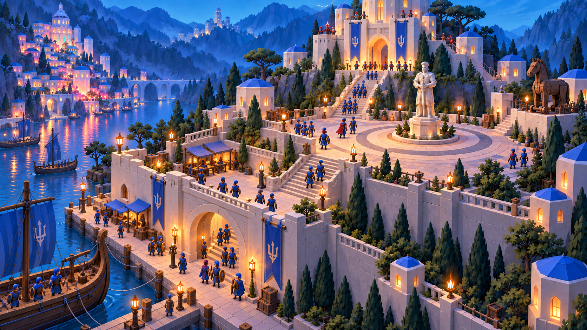
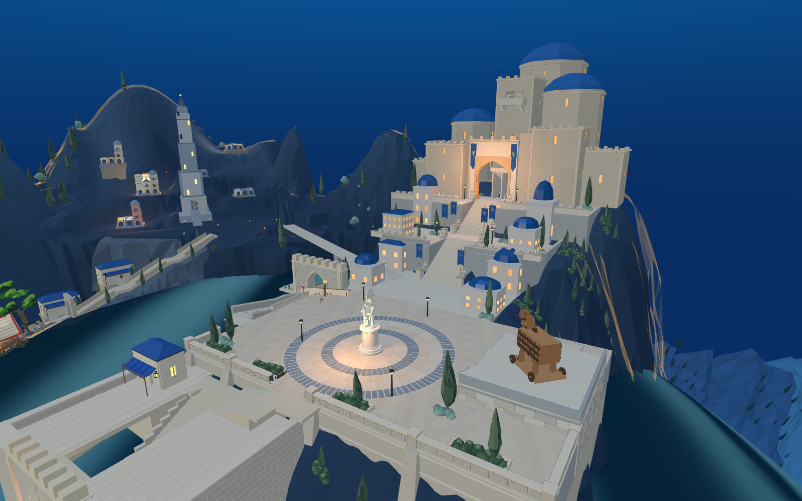
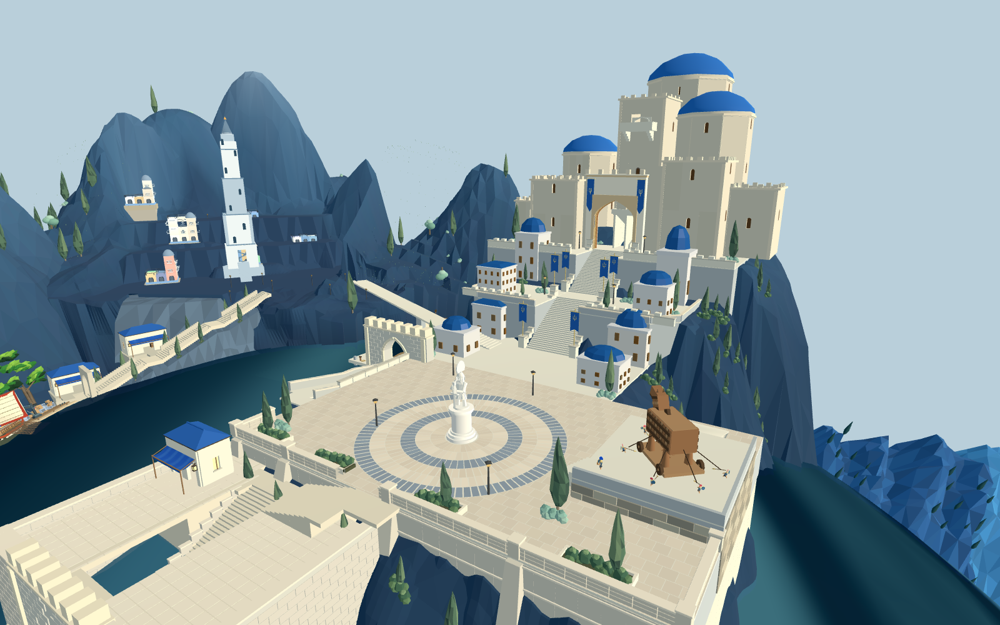
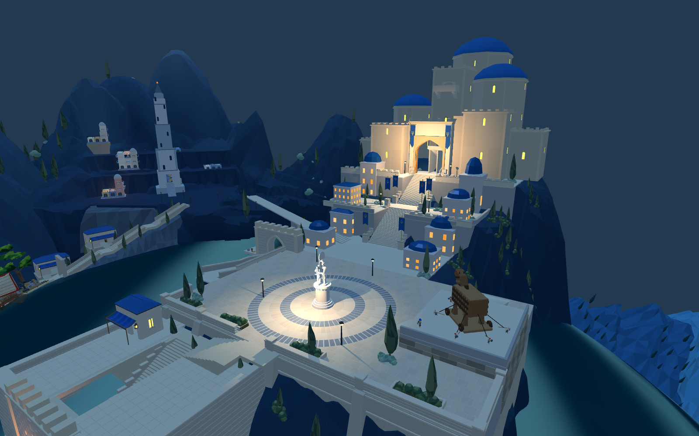

真实游戏截图，整体美术尚未验收。默认加载山体R09、水域R02及置屋R04/固定81单元来源映射；同一Godot的普通圣城场景自动装配。网页依然为原Three.js游戏，不是Godot Web导出。

绿植第2轮：树冠按实际墙面三角形检查干涉，旧水门入口单独留空。本批岩肩群落保留11棵柏树、21组灌木；这只代表本批，不是全场植被数量。群落密度与目标图仍有差距。
绿植第3轮冻结：本批最终31棵柏树、54组灌木已同步两端；仍未达到目标群落密度与自然程度。下一阶段布光。
布光3轮预算冻结：同源新旧城灯位、窗户昼夜切换及两盏建筑阴影已接入；桌面阴影检查。全场漏光、动态角色阴影及目标夜景仍未完成。



本轮默认网页前港332处地面与头部采样通过；Godot普通入口确认4996铺装三角形、木马(85,5.8,72.5)、雕像(65,4,76)与15点出场路线。此前相同布局原兵全路768段通过。未证明完整战斗、登船或全部装备通行。
剩余：悬空/侵入环形铺装的植被、方整前港台基、稀疏旧城与细长原塔、灯光和背景层次。下一阶段绿植1/3；这些差距不算美术验收通过。